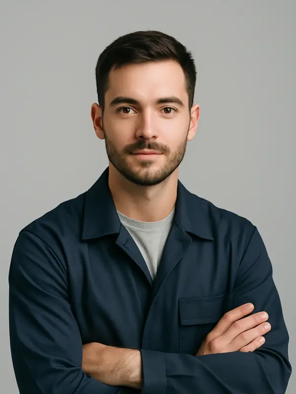

Sobre nosotros
Tecnología con propósito.
En Codemetry creemos que la tecnología no solo debe resolver problemas, sino también impulsar el crecimiento de las empresas. Combinamos estrategia, innovación y experiencia técnica para crear soluciones digitales a medida, eficientes, seguras y de alto impacto.
- 01
Precisión técnica
Cada decisión se apoya en datos y en buenas prácticas, no en modas.
- 02
Visión de negocio
La tecnología tiene que ayudarte a crecer, no solo a funcionar.
- 03
Seguridad primero
Protegemos tus datos desde el primer día de cada proyecto.
Nuestro equipo
Las personas detrás de cada proyecto.
Laura Sánchez
CEO y fundadora
Marca la visión general de la empresa, coordina los proyectos clave y representa a Codemetry.

David Romero
Director de tecnología (CTO)
Supervisa las decisiones tecnológicas, la estructura del software, la seguridad y la infraestructura de todos los proyectos.
Clara Nieto
Responsable de ciberseguridad
Protege los datos, analiza vulnerabilidades y aplica estándares como RGPD e ISO 27001.
Elena Ruiz
Full Stack Developer
Crea aplicaciones completas, de la interfaz al servidor, con código limpio y escalable.
Marcos Delgado
IT Consultant
Hace de puente entre el cliente y la tecnología y propone soluciones según los objetivos del negocio.
Sandra Vélez
Responsable de marketing digital
Posiciona la empresa en internet con SEO, atrae clientes nuevos y cuida la identidad digital.
Ana Beltrán
Administradora de sistemas
Mantiene operativa la infraestructura de Codemetry y garantiza su rendimiento y disponibilidad.
Iván Torres
Técnico de soporte IT
Resuelve incidencias, da soporte remoto y presencial y mantiene en marcha los sistemas de los clientes.
¿Empezamos?